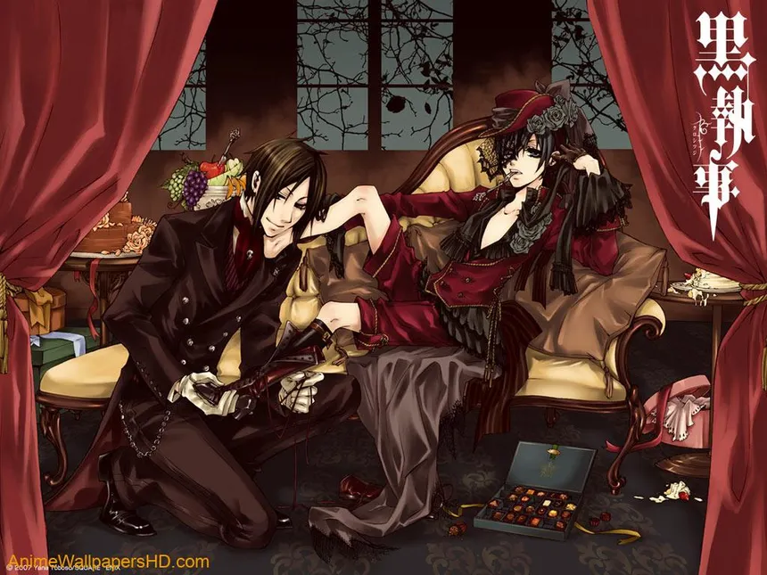
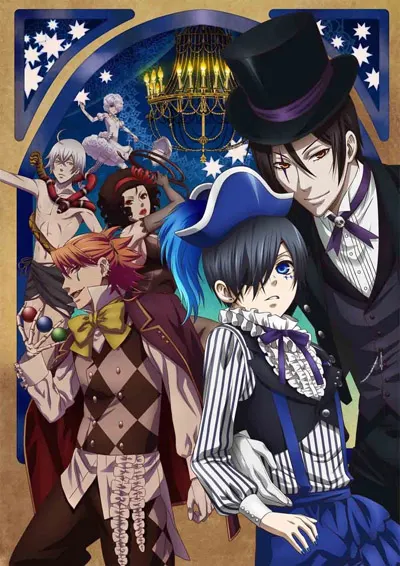

Book of Circus
A finales del siglo XIX en Inglaterra, el Circo del Arca de Noé da vida a la ciudad de Londres con su grandeza y acrobacias espectaculares. Sin embargo, los niños están desapareciendo misteriosamente de la ciudad en relación con la actividad del circo. La reina, entonces, envía a su perro guardián, Ciel Phantomhive, en una misión de investigación para recuperar a los niños desaparecidos. Ciel y su mayordomo demonio, Sebastian Michaelis, se infiltran en el circo, disfrazados como miembros del equipo, para estudiar y descubrir su motivo oculto.